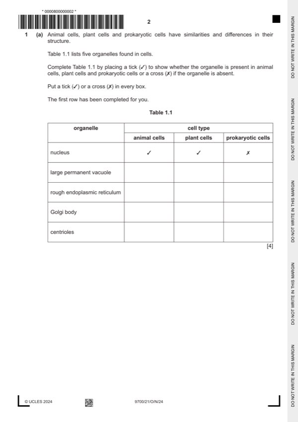

Question 1

Original paper page 2
Part 1(a) — solution
Answer: 4
4
cell type
organelle
prokaryotic
animal cells plant cells
cells
nucleus ✓ ✓
large permanent
✓ ;
vacuole
rough endoplasmic
✓ ✓ ;
reticulum
Golgi body ✓ ✓ ;
centrioles ✓ ;
Mark points
- Correct result: 4
Part 1(b)(i) — solution
microvilli ; 1
Mark points
- Include the ideas shown in the solution above.
Part 1(b)(ii) — solution
site of aerobic respiration, so 2
produces / provides, ATP ;
A provides energy
R produces energy
use of ATP in context of absorption of digested food
for, active transport / (idea of) absorption against a concentration gradient
or
endocytosis / pinocytosis; A bulk transport into cell(s) ;
University Press & Assessment 2024 Page 5 of 16
9700/21 Cambridge International AS & A Level – Mark Scheme October/November 2024
Mark points
- Include the ideas shown in the solution above.
Part 1 — solution
carbohydrate is transported in (phloem) sieve tubes ;
A sucrose transported
A sieve tube elements
Mark points
- Include the ideas shown in the solution above.
Part 1 — solution
example of structural change to sucrase ;
e.g. translation stops prematurely / truncated polypeptide / AW
change in the primary structure / different amino acid(s)
polypeptide does not, fold into / form, (correct) tertiary structure
Mark points
- Include the ideas shown in the solution above.
Part 1 — solution
at lower concentrations there are not enough, active sites / enzymes ;
Mark points
- Include the ideas shown in the solution above.